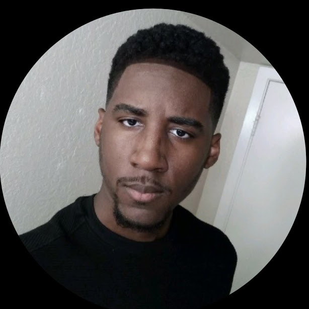
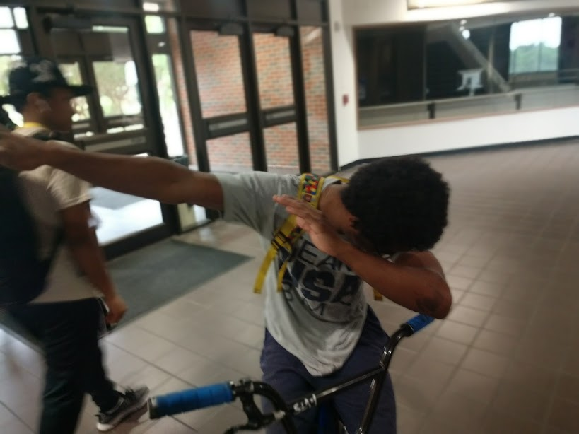
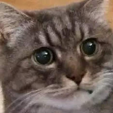
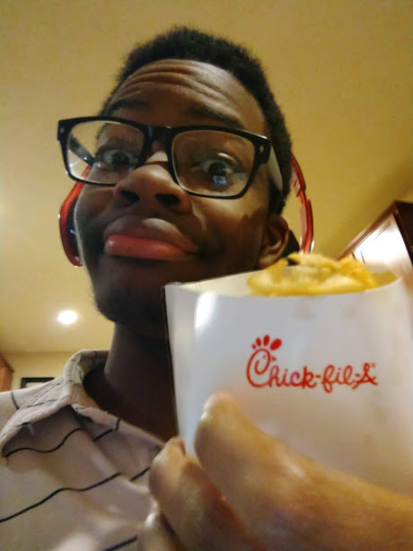

Uchechukwu Uboh
The Database Boi
Uboh is a man of passion in his technical field, but not only is he passionate about work but he is also passionate about potatoes. An added bonus for the ladies if you will.

Kedar Brooks
Direct Messager Man
Kedar is a tall man with a tall pallette of technical abilities. He may have a quiet demeanor but he has a loud passion for potatoes.

Uhl Woods
Hyperlinking the Stars
Uhl is da boi dabing his way into your life with a passion for Smash brothers. His true skill lies in how he dabs butter on baked potatoes.

Muhammad Ghazi
Cat man with a Plan
Muhammad is a man of stature and intellect but when a soud is spodded his potato radar goes Kapow with passion!

Daniel Linder
The Potato Man
Daniel is the professor of potatoes. Not even, his students call him Professor Potato and his knowledge and love for potatoes is quite maginificent.